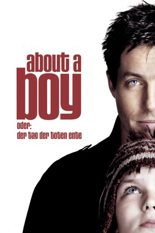

#1551 About a Boy oder: Der Tag der toten Ente
Alternativ: About a Boy
Auszeichnungen: für 1 Oscars nominiert
 gesehen am 04.02.2018
gesehen am 04.02.2018
 
 IMDB-Wertung: 7.1 / 10
IMDB-Wertung: 7.1 / 10  Metascore: 75
Metascore: 75 
Will Freeman wird von all seinen Geschlechtsgenossen beneidet - er fährt ein schnelles Auto, genießt seine Affären und kann mit 38 ohne jede Verantwortung in den Tag hinein leben... Seine neue Taktik für den Frauenfang ist der Besuch von Selbsthilfegruppen für allein erziehende Mütter und Väter, denn das ist genau der richtige Ort um auf einsame Frauen zu treffen. Doch dann begegnet Will Marcus. Dieser ungewöhnliche Zwölfjährige bringt sein Leben völlig durcheinander - mit äußerst amüsanten Folgen.
Jahr: 2002
Dauer: 101 Minuten
FSK: 6
Land: England Studio: UIPTonspuren: DTS - ,
Untertitel: Deutsch,
Auflösung: 1080p (1920x824) Größe: 5273 MB
Genre: Drama, Komödie, Liebe
Regisseur: Chris Weitz, Paul Weitz
Drehbuch: Nick Hornby, Peter Hedges, Chris Weitz, Paul Weitz
Soundtrack: Badly Drawn Boy
Darsteller:
 Hugh Grant als Will Freeman
Hugh Grant als Will Freeman Nicholas Hoult als Marcus Brewer
Nicholas Hoult als Marcus Brewer- Sharon Small als Christine
 Toni Collette als Fiona Brewer
Toni Collette als Fiona Brewer- Natalia Tena als Ellie
- Christopher Webster als Ellie's Friend
- Paulette P. Williams als Bitter Ex-Girlfriend
- Tessa Vale als Class Teacher
- Bruce Lawrence als Husband in Supermarket
- Jenny Galloway als Frances / SPAT
- Victoria Smurfit als Suzie
- Cathy Murphy als Nurse
- Annabelle Apsion als Amnesty International Worker
- Matthew James Thomas als Candy Thrower
- Denise Stephenson als Lindsey
 Rachel Weisz als Rachel
Rachel Weisz als Rachel- Augustus Prew als Ali
- Mark Heap als Math Teacher
- Stefan Pejic als Apple Thrower
- Tim Rice als Himself , archive footage, uncredited
- Carol Vorderman als Herself , archive footage, uncredited
- Madison Cook als Imogen
- Jordan Cook als Imogen
- Nicholas Hutchison als John
- Ryan Speechley als Barney
- Joseph Speechley als Barney
- Laura Kennington als Ellie's Friend
- Tanika Swaby als Ellie's Friend
- Peter McNicholl als Ellie's Friend
- Ben Ridgeway als Lee
- Jack Warren als Lee's Sidekick
- Russell Barr als Maitre D'
- Isabel Brook als Angie
- Orlando Thor Newman als Angie's Kid
- Fritha Goodey als Bitter Ex-Girlfriend
- Susannah Doyle als Bitter Ex-Girlfriend
- Delma Walsh als Bitter Ex-Girlfriend
- Jonathan Franklin als Mark
- John Kamal als Nicky
- Lorna Dallison als Woman in Supermarket
- Bethany Muir als Child in Supermarket
- Joyce Henderson als Moira / SPAT
- Janine Duvitski als Caroline / SPAT
- Sue Hyams als SPAT Woman
- Maggie Kahal als SPAT Woman
- Lynn Askew als SPAT Woman
- Beverly Milward als SPAT Woman
- Danielle Harvey als SPAT Woman
- Anna Maria Credenzone Philip als SPAT Woman
- Sarah King als SPAT Woman
Datei: X:\2002\About a Boy oder Der Tag der toten Ente (2002, FSK6, 1920x824).mkv seit 16.07.2015
Festplatte: HD 1996-2002
 Es gibt insgesamt 93 Filme in der Gruppe '2002'
Es gibt insgesamt 93 Filme in der Gruppe '2002'